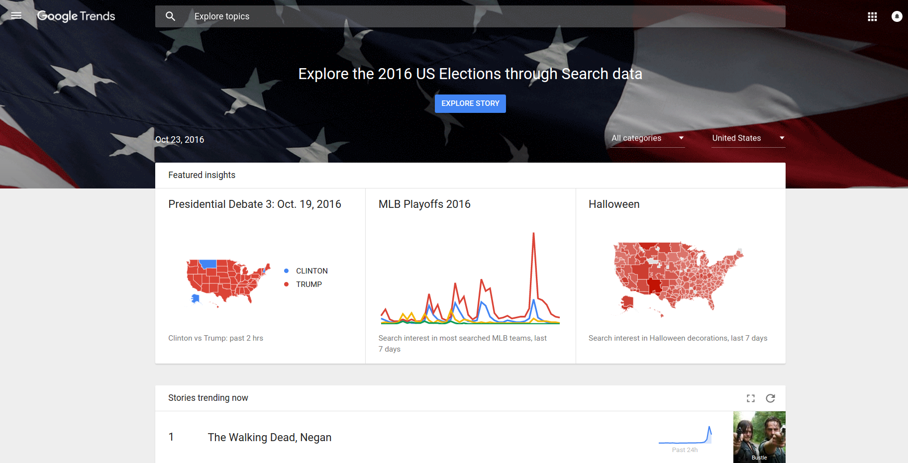
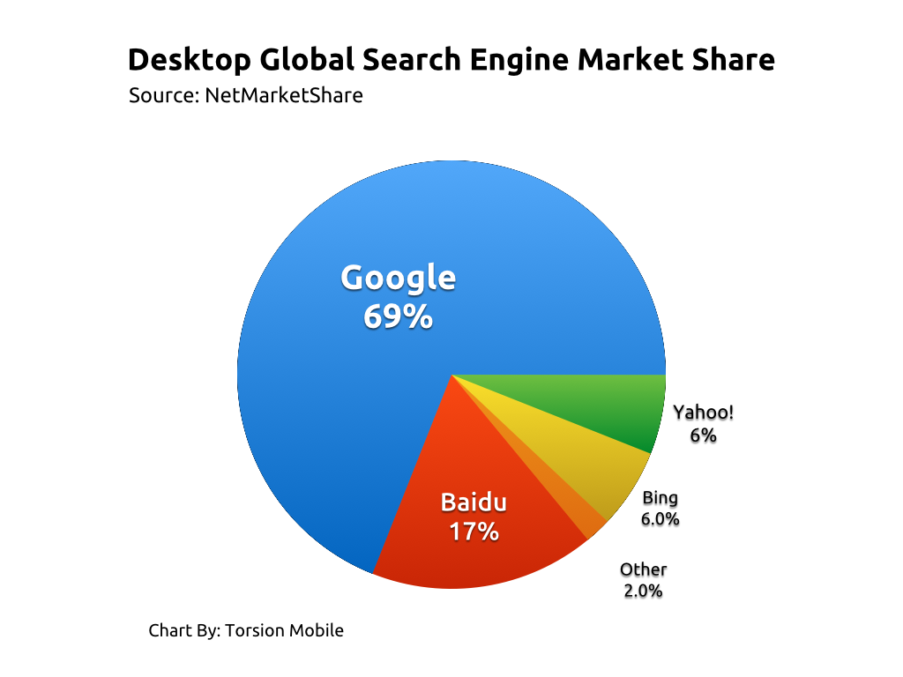

“Freedom of information is a fundamental human right and the touchstone of all freedoms to which the United Nations is consecrated” (Nderi, Anne. (2008). Freedom of Information Is Democracy's Cornerstone.) Information is really important these days because it is the foundation of every organization. Big companies like Google, Amazon, Netflix, etc need information in order to create better user experience and attract more customers to use their services, and they can make money from that. For business, “good information management is about delivering business insight using the full set of information, and it makes a significant impact to an organization's performance if done well.” (Bentley, Jeremy. (2015). Why Information Managment Is Important.)
Information is also important to every individual because information actually affect directly to our life. We should know information about who is going to be the next president?, how it will affect our lives if he/she becomes the new president?, which stores has cheap and good groceries?, what schools is good for our children?, where we should go for our next trip?,etc. In fact, there are tons of search queries happening every single second on Google, and Google does a super nice job on Google Trends allowing users to see how often subjects, phrases, and keywords have been queried over a period of time.
 Google Trends allowing users to see how often subjects, phrases, and keywords have been queried over a period of time. Source: Google TrendsWe can see that there are a lot of information that we need to know, and the most common and easiest place we could find information is the Internet. With a few clicks, we can find tons of information. But, to find reliable information on the Internet is not easy. Here are some Google search techniques that I know, and I have been using them to find information in the Internet:
* Use quotation to search for the exact phase: Cookie recipe “Chocolate chip”
* Use minus to exclude a word:
Cookie recipe -egg
* Use ~ sign to include synonyms of a word:
Cookie recipe ~quick
* Use related: to search similar or related websites:
related:techcrunch.com
* Use intitle: to search for pages containing a word in their titles or urls:
intitle:computer
* Use site: to search in a website:
macbook pro 2016 site:techcrunch.com
Above are just a few tips I usually use. There are a lot more tips listed at Lifehack. Google is a pretty smart tool providing lots of techniques to search for information on the Internet, and Google is the most popular tool when it comes to searching on the Internet.
 Global search share market. Source: Quantum Media Mauritius BlogHowever, there a tons of websites on the Internet, we have to know which one to pick to get the reliable information. First of all, we can check if the information is coming from the websites that we know or information coming from reliable websites like The New York Time, BBC, NBC, etc; if information comes from these websites, then we safely assume that the information is reliable. Also, we can check the author’s credentials; if the information is from a reliable author, then most likely it is good information. Next, we can also check for the published date to make sure that the information we get from the results is not “out-of-date.” Lastly, we can also check the domain such as .org (belongs to organizations), .edu (belongs to educational institution), and .gov(belongs to governments); this means that information comes from these websites are also reliable.